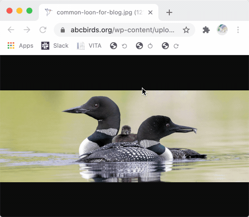

Rotate Page
Ever load an image that needs to be rotated? These bookmarklets rotate the page for you, entirely securely and within browser.
Drag these three icons to your bookmarks bar to install them. More information on how can be found here.
© Nick Quinlan 2021 - MIT / Beerware Dual License
Built for VITA Volunteers with 💛
Tested on Chrome Latest. Code available on GitHub or by viewing source.
